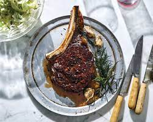

Steak Recipe

Steak is the legendary gold standard when it comes to meat.
- Rib Eye Steak
- Garlic
- Olive Oil
- Salt
- Pepper
- Butter
- Thyme
- First take the steak out of the fridge and let it rest in room temp for 30 minutes
- Set the cast iron heat on high and let it get warm
- Cover the Ribeye steak with olive oil and pepper
- Put the steak on the pan, and flip it every 60 seconds till you reach the 6 minute mark in order to achieve medium rare
- Whilst cooking and flipping, add thyme, butter, and garlic into it and throw it on the steak so that it absorbs it
- Take it out and let it rest for 5 minutes before cutting and enjoying
- Once cut, put salt on it to taste, it should be absolutely delicious